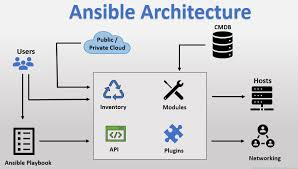

Partie 1 : Introduction à Ansible et aux Playbooks
Objectifs
Dans cette première partie, vous découvrirez :
- Les principes fondamentaux d’Ansible et ses avantages pour l’automatisation.
- Comment installer et configurer Ansible pour un usage de base.
- La structure de base d’un playbook Ansible et ses éléments essentiels.
1.1 Présentation d'Ansible et de ses Concepts Fondamentaux
Ansible est un outil d’automatisation open-source conçu pour simplifier la gestion des infrastructures, avec des fonctionnalités d’infrastructure-as-code (IaC) pour décrire l’infrastructure sous forme de code.
Concepts clés :
- Agentless : Ansible ne nécessite pas d’agent installé sur les machines distantes, ce qui réduit la complexité de gestion.
- Infrastructure-as-Code : Permet de décrire l’infrastructure dans des fichiers de configuration (playbooks).
- Exécution en parallèle : Capacité d'exécuter des tâches simultanément sur plusieurs machines.

Utilisation d’Ansible pour AWS
Ansible est souvent utilisé pour gérer des environnements cloud, comme AWS, permettant de configurer des ressources (instances EC2, buckets S3, etc.) et de les gérer à grande échelle. Cette approche aide les équipes à standardiser et automatiser leur infrastructure.
1.2 Installation et Configuration de Base
Installation d'Ansible
Ansible s’installe facilement et est compatible avec de nombreux systèmes d’exploitation :
- Linux/Mac : Utilisation de
apt,yum, oubrew. - Windows : Utilisation de Windows Subsystem for Linux (WSL) pour installer Ansible dans un environnement Linux.

Source: https://www.frostbyte.us/ansible-integrated-development-environment-setup-on-windows/
Structure d’un projet Ansible
Un projet Ansible typique comporte trois éléments principaux :
ansible.cfg: Fichier de configuration qui définit les paramètres globaux d’Ansible.inventory: Fichier qui liste les hôtes à gérer (sous forme d’adresses IP ou de noms de domaine).- Playbook : Fichier YAML contenant des tâches automatisées pour gérer ou configurer les hôtes.
Exercice : Installer Ansible et configurer un inventaire simple avec une machine de test.
- Installez Ansible en suivant les instructions pour votre système d’exploitation.
- Créez un fichier
inventoryen y ajoutant l'adresse IP ou le nom de domaine d'une machine de test. - Configurez
ansible.cfgpour spécifier le fichier d’inventaire par défaut et tester la connexion.
1.3 Structure de Base d'un Playbook
Un playbook est un fichier YAML qui définit une série de tâches à exécuter sur des hôtes spécifiés. La structure de base d’un playbook inclut :
- hosts : Les machines sur lesquelles les tâches seront exécutées.
- tasks : Une liste de tâches à exécuter.
- vars : Variables qui définissent des valeurs réutilisables dans le playbook.
- name: Playbook de base
hosts: all
vars:
user: ubuntu
tasks:
- name: Vérifier la connexion avec les hôtes
ping:
- name: Récupérer les informations système
setup:

Source: https://www.middlewareinventory.com/blog/ansible-playbook-example/
Explication des blocs
hosts: Détermine les hôtes ciblés (par exemple,allpour toutes les machines de l'inventaire).vars: Les variables permettent de personnaliser et de réutiliser des valeurs.tasks: Chaque tâche utilise un module (par exemple,ping,setup) pour exécuter une action spécifique.
Exercice : Créer un playbook simple pour effectuer des vérifications basiques
- Objectif : Créer un playbook pour tester la connexion avec les hôtes et récupérer des informations système.
- Étapes :
- Créez un fichier
simple-playbook.yml. - Ajoutez un bloc
hostspour spécifier les machines cibles et un bloctasksavec les modulespingetsetup. - Exécutez le playbook avec la commande :
ansible-playbook -i inventory simple-playbook.yml - Vérifiez que le playbook s'exécute correctement et renvoie les résultats des tests.
- Créez un fichier
Liens vers la Documentation
- Documentation officielle d'Ansible [fr]
- Installation d'Ansible [fr]
- Guide d'écriture de playbooks [fr]
Questions de Révision
Questions de Révision
Qu'est-ce qu'un inventaire dans Ansible ?
Solution
Un inventaire est un fichier qui liste les hôtes à gérer, en indiquant leurs adresses IP ou noms de domaine, et parfois des informations supplémentaires (comme les groupes).Quels sont les trois blocs principaux d’un playbook Ansible ?
Solution
Les trois blocs principaux sont `hosts` (pour les hôtes cibles), `tasks` (pour les tâches à exécuter), et `vars` (pour les variables).À quoi sert le fichier `ansible.cfg` dans un projet Ansible ?
Solution
Le fichier `ansible.cfg` permet de configurer les paramètres globaux d'Ansible, comme le fichier d'inventaire par défaut, le comportement de connexion, et d'autres options.Conseils Pratiques
- Nommer vos tâches de manière explicite pour mieux comprendre le déroulement des exécutions dans les logs.
- Utiliser les variables pour éviter la répétition de valeurs spécifiques dans les playbooks.
- Tester la connexion aux hôtes avec une commande Ansible simple (comme
ping) avant d'exécuter des playbooks complexes. Plus de détails sur les playbooks
Défi Intermédiaire
Défi Intermédiaire
**Objectif** : Configurer un playbook pour automatiser les vérifications de connectivité et d’information système sur plusieurs hôtes.
Contexte : Vous devez vérifier la connectivité et collecter des informations système sur plusieurs serveurs dans un inventaire.
Étapes principales
- Créez un fichier `multi-check.yml` avec `hosts` ciblant plusieurs hôtes de l’inventaire.
- Ajoutez des tâches pour exécuter des vérifications `ping` et collecter les informations système (`setup`).
- Exécutez le playbook et vérifiez les résultats sur chaque hôte.
Compétences renforcées :
- Création de playbooks simples
- Exécution de commandes de vérification sur plusieurs hôtes
Solution suggérée
Utilisez le playbook suivant :- name: Vérifications sur plusieurs hôtes
hosts: all
tasks:
- name: Vérifier la connexion
ping:
- name: Collecter les informations système
setup:
Exécutez-le avec :
ansible-playbook -i inventory multi-check.yml